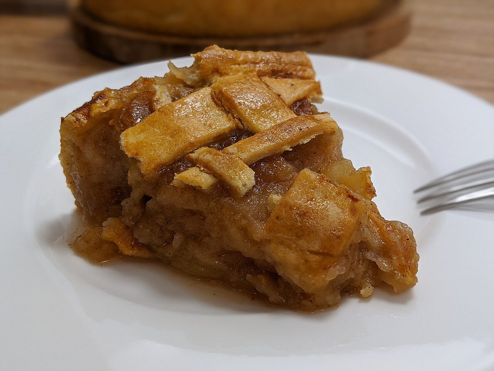

ドイツ洋菓子レーベンハウス


制作側の連想
木組みの家に見立てて
このページの作りは、制作側が「ドイツ」「ハウス」という言葉から連想した木組みの家(梁と漆喰の壁)です。写真や文章を、梁で区切った壁の一面ずつに収めています。お店の理念・由来とは無関係の、制作側の連想です。
ドイツ語で Leben は「暮らし」、Haus は「家」を意味する言葉です。ただ、店名の由来がこの意味かどうかは確認できていません。
壁のパネル
洋菓子店からの連想イメージ
写真はお店のものではなく、国外または撮影地不明のフリー素材です。お店で提供している商品を示すものではありません。



ご案内
確認できているのは所在地とInstagramだけです。ほかは準備中です。
店舗情報
確認できていること
| 所在地 | 〒501-4221 岐阜県郡上市八幡町小野3丁目2-13 |
|---|---|
| 電話 | なし |
| 営業時間 | 準備中 |
| 定休日 | 準備中 |
| ご予約 | 準備中 |
| 駐車場 | 準備中 |
| SNS | Instagram @lebens_haus |